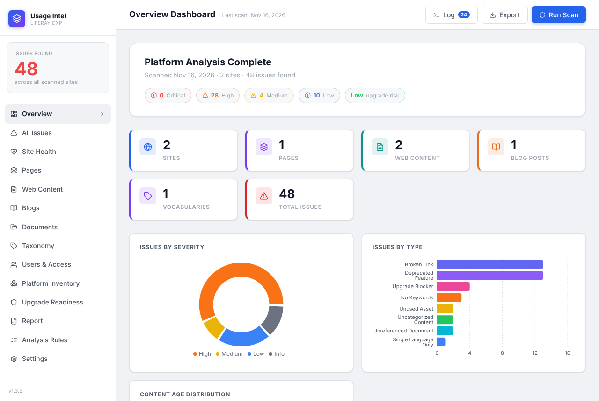

Liferay のサイトをスキャンし、リンク切れ、未使用・更新の止まったコンテンツ、長期間使われていないアカウント、そしてアップグレード時に影響を受ける箇所を見つけます。サインインした管理者の権限と読み取り専用のアクセスで Liferay の中で動作し、すべての指摘に修正方法と Liferay のドキュメントへのリンクが付きます。試験的な利用を想定したコミュニティアプリです。
不具合の報告・機能の提案（英語）→機能
- 設定は不要. zip を 1 つデプロイするだけで、管理者だけが開けるダッシュボードのページが作成されます。
- 読み取り専用（Liferay が強制）. OAuth 2 アプリケーションには読み取りスコープしかないため、ユーザー自身の権限にかかわらず、Liferay はすべての書き込みを拒否します。パスワードの入力や保存もありません。
- サイトヘルス. ページ、Web コンテンツ、ブログ、ナレッジベース、掲示板、Wiki、ナビゲーションメニュー内の、リンク切れのページ・画像・動画・PDF を Liferay で確認して報告し、レポートとしてダウンロードできます。
- アップグレード準備. 現在のリリースから移行先までの Liferay の破壊的変更を、ご自身のデータと照らし合わせて確認し、使用中の非推奨機能も示します。
- コンテンツとアクセスの整理. 未使用・更新停止・重複したコンテンツ、空のフォルダー、未使用のタグとカテゴリー、大きなファイル、長期間未使用または一度も使われていないアカウント、滞留している承認を見つけます。
- zip または Docker. zip を deploy フォルダーに置くか、コンテナイメージから Liferay のイメージに追加できます。
スクリーンショット
